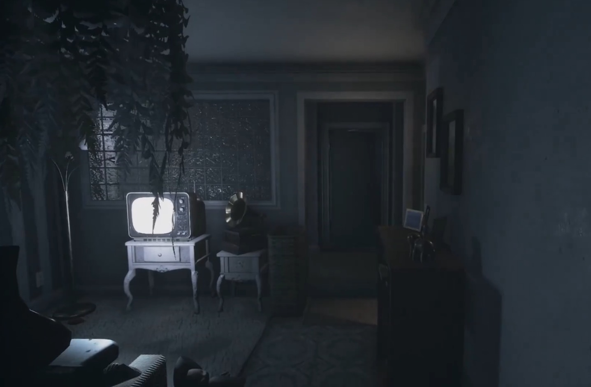

| 恐怖游戏 | ||||
|
||||
|  | ||||
|
恐怖游戏，作为游戏这个艺术形式的一个子类型，一直处于一个半“小众”，半“热门”的看似矛盾的状态。 小众，自然是因为真正愿意去游玩，并且持续游玩下去的人可以说是少之又少。大部分人都被其硬核的恐怖氛围和层出不穷的惊吓元素给劝退，而正是出于这种原因，许多游戏厂商都有意识地降低了恐怖游戏的恐怖程度和关卡难度，并设置了许多“安全屋”一类的设定，使得玩家紧张之余能偶尔松一口气。与其说这是恐怖游戏界约定俗成的规则，倒不如说是厂商在恐怖这一课题和销量这一目的之间的妥协——想做出高口碑，名气广的恐怖游戏，就必须保持相当水准的恐怖程度，而想要大家购买和游玩，又必须保证大家不要被游戏给吓跑了。不管怎么样，可见一斑的是，恐怖游戏确确实实超出了大部分游戏玩家的舒适区，也从而注定是一个小众的题材。 那么，为什么又要说恐怖游戏是热门的呢。自然是因为大家不喜欢被吓，却如出一辙地喜欢看别人被吓。于是衍生出了许多所谓的“恐怖游戏主播”。这些主播是真正让恐怖游戏这种艺术题材能够大众化，让许多优秀的恐怖游戏表达的思想观念得以传达到广大观众的重要媒介。在这个网站，我作为一个狂热的恐怖游戏爱好者，也有志于成为一个独立恐怖游戏制作者，将与大家探讨一下关于恐怖游戏的一些话题。 |
||||
| Return |